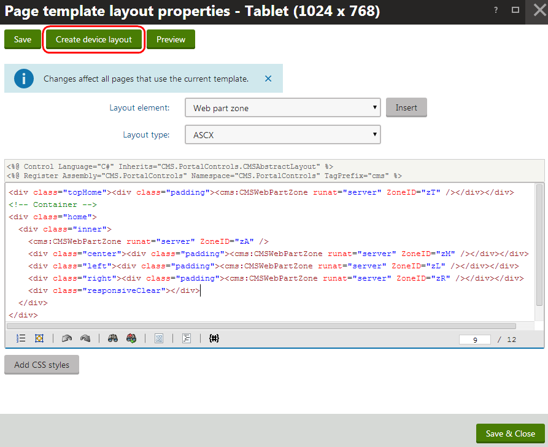

Creating page layouts for devices
Various devices have different capabilities and screen resolutions, which makes it difficult to build a single page layout suitable for all devices. Individual page templates allow you to define alternative page layouts for specific device profiles.
Pages based on these templates automatically use the appropriate layout according to the device profile detected for each visitor.
Adding device layouts for pages
To create a dedicated device layout for a page:
Open the Pages application.
Select the page in the content tree.
Open the Design tab.
Switch to the device profile for which you intend to create the layout (use the device selector in the header of the Design tab).
Right-click the header of the page template area and select Edit layout in the menu.
Click Create device layout.

Creating a new device layout for a pageSelect the source for the new device layout's initial content:
Copy from device profile - copies the layout code from the template's default page layout or from one of its other device profile layouts.
Use existing layout - allows you to select an existing shared page layout.
If you leave the Copy as custom box selected, the system creates the device layout as a separate copy of the selected layout. If you clear the check box, the page template directly uses the shared layout for the device profile (changes made to the layout code affect all pages based on the same shared layout).
Use empty layout - creates a new custom layout for the device profile with a single web part zone and no other formatting.
Click Save & Close.
Define the code of the page layout for the given device profile.
Adding web part zones
The page template allows you to share web part content between the default page layout and device layouts. To implement this scenario, set identical ID values (ZoneID attributes) for the web part zones in the code of the template's various page layouts. Moreover, not only the web part content, but also the order of web parts within the web part zones with identical ID values is shared.
If you add web part zones with unique zone IDs, the zones are only available in the specific device layout. When the system renders the page, it only displays the content of zones that exist in the currently active page layout.
(Optional) Click Add CSS styles below the layout's code.
The CSS styles editor appears, where you can define any device-specific CSS classes used within the layout code. The page loads these styles when a visitor views it on a device that matches the given profile.
Click Save & Close.
The page now automatically adjusts its layout based on the device profile detected for individual visitors.
You can modify the web part content of the page for different device profiles by using the Design tab of the Pages application in combination with the device selector. See Creating mobile pages for details.
Managing device layouts of templates
You can also manage device layouts through the page template editing interface.
Open the Page templates application and select a page template.
Open the Device layouts tab.
This tab displays a list of the template's page layouts designed for specific device profiles. You can Create device layouts and edit or delete existing ones.
Create or edit a device layout. The following sub-tabs become available:
Layout - allows you to modify the device layout's code.
Design - displays the current page template in Design mode (using the given device layout).
Theme - allows you to manage files required by the device layout's CSS styles, such as images or skins
Versions - allows you to view the device layout's version history.
Any changes made on these tabs have the same effect as when editing page layouts directly in the Pages application.